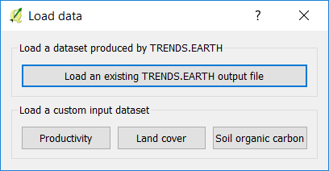

Load data tool¶

The “Load data” function allows the user to load data into QGIS and LDMS for analysis.
There are two options, to load results of LDMS analysis or to load custom datasets which will be used to compute the indicators.
Load a dataset produced by LDMS¶
This option lets you load already downloaded results from LDMS.
Productivity¶
Use this function to load into the QGIS map pre-computed productivity indicators which had been processed to identify land degradation.
Navigate to the folder where you stored the downloaded file and select it. The downloaded file is an 8 band raster, with each band representing the three subindicators (trajectory, performance and state) plus other information which may help you interpret the trends identified. The layers to be loaded into the QGIS maps are the ones highlighted in gray. By default: trajectory (degradation and slope), performance and state. If you want to load the other layers, simply select them and click OK.

The layers will be loaded in the QGIS map with its corresponding symbology.

Land cover¶
This option lets you load pre-computed land cover indicators which had been processed to identify land degradation.
Navigate to the folder where you stored the downloaded file and select it. The downloaded file is a multi band raster. The number of bands will depend on the period of analysis selected and the data source used. If the default ESA CCI land cover was used, for example, annual land cover maps will be downloaded.
The bands in the stack represent: initial and final land cover (annual if available) both in the original classification scheme and using the UNCCD 7 class land cover table, land cover transitions and land cover degradation as identified by this subindicator. If you want to load the other layers not selected by default, simply select them and click OK.

The layers will be loaded in the QGIS map with its corresponding symbology.

Soil organic carbon¶
This option lets you load pre-computed soil organic carbon indicators which had been processed to identify land degradation.
Navigate to the folder where you stored the downloaded file and select it. The downloaded file is a multi band raster. The number of bands will depend on the period of analysis selected and the data source used. If the default ESA CCI land cover was used, for example, annual soil organic carbon maps will be downloaded.
The bands in the stack represent: initial and final soil organic carbon stocks (annual soc if annual land data is available), initial and final land cover maps using the UNCCD 7 class land cover classification,and degradation as identified by this subindicator. The units of the degradation layer are “% change”, if changes are larger than 10% for the period, they will be considered as improvement or degradation depending on the sign of the change. If you want to load the other layers not selected by default, simply select them and click OK.

The layers will be loaded in the QGIS map with its corresponding symbology.

SDG 15.3.1 indicator¶
This option lets you load pre-computed productivity subindicator (the integration of trajectory, performance and state) as well as the final SDG 15.3.1 (the integration of productivity, land cover and soil organic carbon)
Navigate to the folder where you stored the downloaded file and select it. The downloaded file is an 2 band raster, the first one containing information on the SDG and the second on the 5 classes productivity subindicator.

The layers will be loaded in the QGIS map with its corresponding symbology.

Load a custom input dataset¶
Productivity¶
Use this option to load productivity datasets which have already been generated outside of LDMS.
Productivity classes in the input data must be coded as follows:
1: Declining 2: Early signs of decline 3: Stable but stressed 4: Stable 5: Increasing 0 or -32768: No data

Land cover¶
Use this option to load land cover datasets which will then be used for land cover change analysis and/or soil organic carbon change analysis.
Note
If you’ll be using the CORINE land cover data, you can use this definition file to pre-load a suggested aggregation of the land cover classes in Corine to convert them to the 7 UNCCD land cover classes.
Soil organic carbon¶
Processing of custom soil organic carbon data can be handled using this tool.
Note
This tool assumes that the units of the raster layer to be imported are Metrics Tons of organic carbon per hectare. If your layer is in different units, please make the necessary conversions before using it in LDMS.